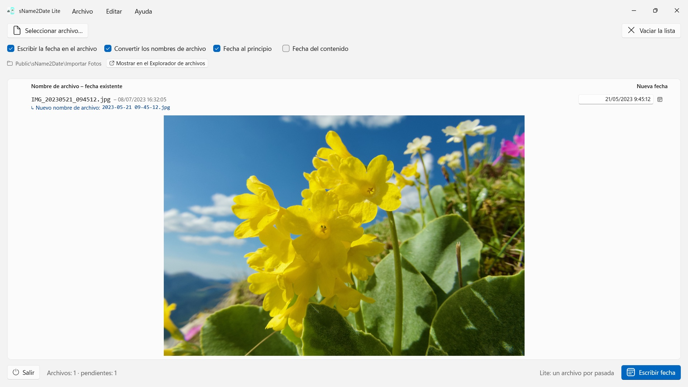
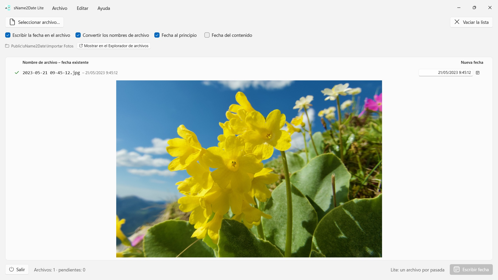

sName2Date Lite
Lee la fecha del nombre del archivo: más de una docena de formatos, nombres de mes en el idioma de la app y en inglés
Toma la fecha del nombre del archivo y la escribe como fecha de captura en una foto o un vídeo, para que tu gestor de fotos y el Explorador de archivos lo ordenen bien. Un archivo por pasada, gratis, todo se deshace con Ctrl+Z.


Muchas fotos y vídeos llevan su fecha en el nombre del archivo, igual que grabaciones de audio y documentos como los PDF, pero no donde los programas la buscan. Quien recibe una imagen de un chat, de un escáner o de un archivo antiguo obtiene un archivo como IMG_20240115_103000.jpg, Vacaciones 15.01.2024.jpg o Factura 23112024.pdf, que aparece en cualquier gestor de fotos y en el Explorador de archivos con la fecha de hoy.
sName2Date lee la fecha del nombre del archivo y la escribe como fecha de captura dentro del archivo. Si todavía no hay ninguna, se crea. En los PDF y demás archivos sin fecha de captura, la app ajusta la fecha de creación y de modificación del archivo. Esta edición toma un archivo por pasada y con él lo hace todo.
25 idiomas: inglés, alemán, checo, croata, neerlandés, finés, francés, húngaro, italiano, japonés, coreano, noruego bokmål, persa, polaco, portugués (Brasil y Portugal), rumano, ruso, español, sueco, tailandés, turco, ucraniano y chino (simplificado y tradicional). La app usa el idioma para mostrar de Windows.
FORMATOS RECONOCIDOS
Fecha y hora en las formas habituales, entre otras:
- 2024-01-15 10-30-00
- IMG_20240115_103000
- IMG-20240115-WA0001
- 2024-01-15 · 2024 01 15 · 2024_01_15
- 15.01.2024 · 15-01-2024 · 15.01.24 · 15012024
- 15 ene. 2024 · 15 marzo 2024 · January 15 2024
- 2016 04 · 04-2016 — solo año y mes
Los nombres de mes escritos con letra se leen en el idioma de la app y en inglés, tanto en la forma larga como en la abreviada.
Si el nombre solo lleva una fecha, se supone una hora; cuál, lo decides tú. Si falta también el día, vale el primero del mes, y la línea lo indica. Si el nombre contiene varias fechas, gana la primera. Y donde el día y el mes podrían intercambiarse, decides tú: el valor predeterminado procede del formato regional de Windows, y los archivos afectados se señalan expresamente, en lugar de adivinar en silencio.
Si en el nombre no hay ninguna fecha, la introduces tú mismo a la derecha de la línea. Eso llega hasta 1826, el año de la fotografía conservada más antigua: las tomas escaneadas del siglo XIX se pueden fechar igual que las de ayer.
QUÉ SE MODIFICA
Se escriben EXIF DateTimeOriginal y DateTimeDigitized, además de TIFF DateTime; en los vídeos y las grabaciones de audio, la fecha de creación dentro del contenedor. Si lo deseas, también la fecha de creación y de modificación del archivo.
Los datos de imagen quedan intactos: un JPEG no se vuelve a comprimir y un vídeo no se vuelve a codificar. En los vídeos y las grabaciones de audio, la app suele cambiar solo unos pocos bytes del contenedor en lugar de reescribirlo; así, incluso un vídeo grande queda listo en un instante. Tras escribir, la app vuelve a leer la fecha; el color de la fila indica dónde ha quedado.
La fecha de captura queda dentro del propio archivo en JPEG, TIFF y HEIC (con la extensión de imagen HEIF de Microsoft), en los formatos de vídeo MP4, MOV y M4V y en los formatos de audio M4A y M4B. PNG, GIF, WebP, AVI y las fotos RAW reciben al lado un archivo XMP adjunto, que leen muchos programas de fotos; la fila lo muestra con una marca azul.
TAMBIÉN LOS ARCHIVOS QUE NO PUEDEN LLEVAR UNA FECHA DE CAPTURA
Un PDF, un archivo de texto, una hoja de cálculo no tiene ningún campo para una fecha de captura y, aun así, entra en la lista. Ahí la app ajusta la fecha de creación y de modificación del archivo, el único sitio al que el dato puede llegar; la fila lo muestra con una marca naranja en vez de una verde. Aquí no cuenta ninguna extensión: PDF, texto, hojas de cálculo, archivos comprimidos, todo.
Si no quieres que se toque el archivo, desactivas en la parte superior de la ventana la casilla «Escribir la fecha en el archivo»; entonces la app se limita a convertir el nombre.
EL NOMBRE, DE PASO
Si lo deseas, la app pone también el nombre del archivo en la escritura ISO en la misma pasada: Vacaciones 15.01.2024.jpg se convierte en 2024-01-15 12-00-00 Vacaciones.jpg. El nombre y la fecha de captura dicen entonces lo mismo.
TODO SE PUEDE DESHACER
Una pasada se deshace por completo con Ctrl+Z: la fecha de captura, las marcas de tiempo del archivo y el nombre modificado. Ctrl+Y la vuelve a aplicar.
MÁS DE UNA VEZ: LA VERSIÓN COMPLETA sName2Date
La versión completa sName2Date toma una carpeta entera en lugar de un solo archivo: la lee, si se desea con todas sus subcarpetas, muestra para cada archivo la fecha encontrada y escribe todo el lote en una sola pasada, incluso mil fotos de un viaje. Si lo deseas, omite los archivos que ya tienen una fecha de captura.
Para un archivo suelto basta con esta edición.
EN TU PC, Y SOLO AHÍ
Sin cuentas, sin nube, sin analítica, sin publicidad. La app solo accede a los archivos que le das. Cada idioma con ayuda completa.
- Requiere Windows 11 o posterior
- 24 idiomas
- Soporte: SwiftAppsBavaria@gmx.net
- Política de privacidad de sName2Date